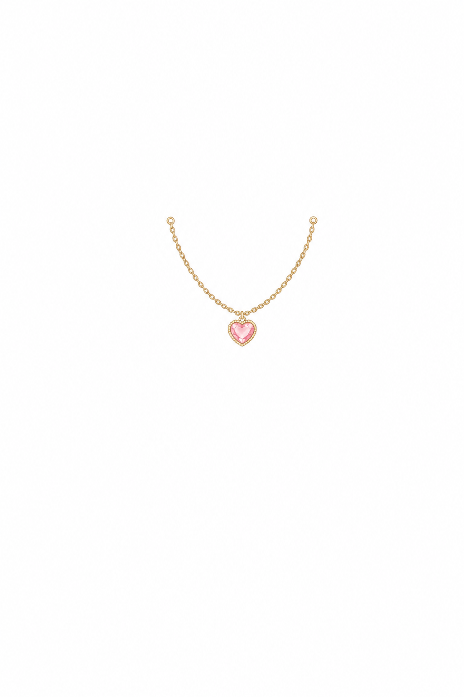
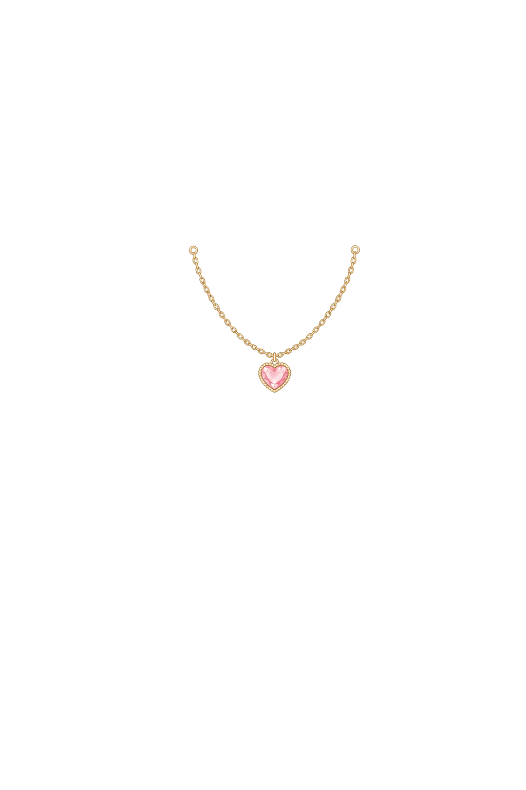
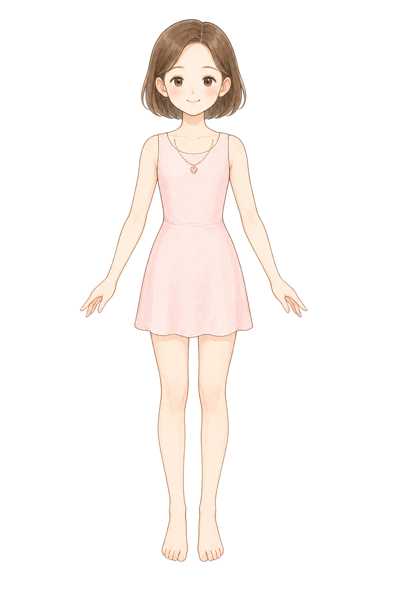

necklace
Necklace: inner shoulder line fit




single small delicate princess necklace layer for a children dress-up game, original pastel storybook encyclopedia illustration matching a soft Japanese picture-book fashion encyclopedia, soft watercolor-like coloring, clean fine linework, front view, draw only the necklace and no body, no neck, no skin, no dress, no mannequin, no shadow, pure white 1024 by 1536 canvas, very narrow symmetrical shallow U-shaped fine gold chain with one tiny pink heart pendant, pendant exactly on the body center line at canvas x 504 y 424, left chain end at canvas x 444 y 376 and right chain end at canvas x 564 y 376, chain follows the inner shoulder and collarbone line from the neck toward the shoulders, total visible necklace width between 120 and 140 pixels, total height between 60 and 85 pixels, keep the whole necklace inside x 434 to 574 and y 360 to 452, do not make a wide shoulder-draped necklace, do not extend to the dress shoulder straps, do not follow a dress neckline, no earrings, no tiara, no text, no watermark